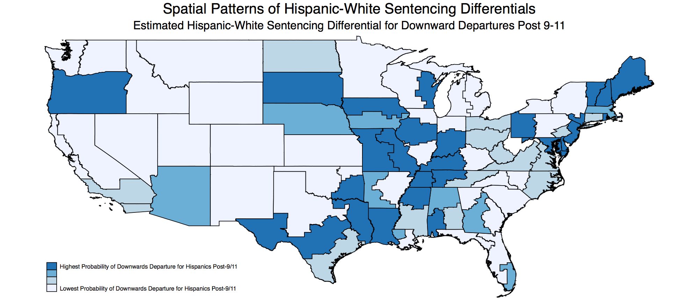

I am a lecturer (assistant professor) in the economics department at the University of Southampton. I received my PhD from University College London, under the supervision of Imran Rasul and Jérôme Adda.
My main research interest is in applied microeconomics. I am currently working on two main projects. One on ethnic differentials in criminal sentencing, and the other on marriage and labour market outcomes. In the past i've worked on several different projects related to education, an area in which I'm still interested.
Hispanic-White Sentencing Differentials in the Federal Criminal Justice System [September 2017], with Imran Rasul
In the federal criminal justice system (CJS), large Hispanic-white differences in sentencing outcomes exist. We examine the malleability of factors that drive such differences. To do so, we exploit 9-11 as an exogenously timed cue heightening the salience of insider-outsider divisions in American society, that might have impacted Hispanic defendants given long-standing interlinkages drawn between terrorism, border security and immigration. Exploiting linked administrative data covering criminal cases from arrest through to sentencing, we use a DiD research design based on defendants all of whom were arrested pre 9-11, but who came up for sentencing either side of 9-11. We find that among those sentenced post 9-11, Hispanic-white judicial sentencing differentials are exacerbated relative to these sentenced pre 9-11, while black-white sentencing differentials are unaffected. Our data and research design allows us to further document the differential treatment of Hispanic defendants by prosecutors in pre-sentencing stages of the CJS, such as with regards to the initial offense charges set. We use decomposition analysis to show the vast majority of sentencing differentials are driven by unobservables rather than sentencing prices on observables such as offense type or criminal history. Furthermore, we document that in districts with a higher proportion of Hispanic judges, Hispanic-white differentials are significantly reduced, consistent with judicial biases influencing decision making. Our results provide insights into the magnitude, channels and malleability of Hispanic-white sentencing differentials in the professional and high-stakes federal criminal justice system.
last updated: june 2016
Quantitative Methods [ECON6004]
Some creative cycling shorts from around the world: DF, LA and Gran Canaria.